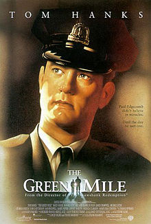

|
1. Esaretin Bedeli |
2s.22dk. | Drama |
Yönetmen: Frank Daramont |
Oyuncular: Tim Robbins, Morgan Freeman, Bob Gunton |
Esaretin Bedeli, Andy ve Red isimli iki mahkumun parmaklıklar ardında kurdukları dünyanın hikayesini anlatıyor. Andy Dufresne, genç ve başarılı bir bankerdir. Karısını ve karısının sevgilisini öldürmek suçundan yargılanır ve ömür boyu hapis cezası alır. Shawsank Hapishanesi'nde dayak, işkence, tecavüz, her türlü durum ... |

|
2. Yüzüklerin Efendisi: Kralın Dönüşü |
3s. 21dk. | Macera, Fantastik |
Yönetmen: Peter Jackson |
Oyuncular: Sean Astin, Elijah Wood, Viggo Mortensen |
Yüzüklerin Efendisi: Kralın Dönüşü, Tek Yüzük'ün yok edilmesi için verilen mücadeleyi konu ediyor. Sauron'un orduları büyüdükçe büyümektedirler. Frodo ve onun can dostu Sam, korku dolu bir yolculuğun göbeğinde, korkunç Mordor'a adım adım yaklaşmaktadırlar. Tek yüzük yok edilmelidir ve iyilik bunun için savaşmaya ... |
|  |
3. Yeşil Yol |
3s. 9dk. | Fantastik, Polisiye |
Yönetmen: Frank Darabont |
Oyuncular: Tom Hanks, Michael Clarke Duncan, David Morse |
Yeşil Yol, bir hapishane görevlisi ile bir mahkumun öyküsünü anlatıyor. Paul Edgecomb'un hapishanedeki görevi, idama mahkum edilen mahkumları son yolculuklarına uğurlamaktır. Çalıştığı yıllar içerisinde yüzlerce mahkumu idam etmiştir. Bir gün John Coffey isimli korkutucu görünümlü bir adamla tanışır. Ancak Coffey'in bu ... |